Executive Summary
This write-up documents a controlled brute-force detection exercise conducted within the MaryShield Cyber Lab.
The investigation focused on repeated failed authentication attempts, Windows Security Event ID 4625, source IP identification, SIEM correlation, endpoint monitoring, network evidence, firewall analysis, MITRE ATT&CK mapping, containment, and defensive hardening.
The objective was to demonstrate how a SOC analyst can identify suspicious authentication patterns, validate the source of the activity, correlate evidence across multiple platforms, and respond appropriately.
Scenario
A controlled series of failed authentication attempts was generated against an authorized lab account to create realistic Windows security telemetry.
The exercise was designed to validate whether repeated failed logons could be detected and investigated across Windows Event Logs, Splunk Enterprise, Wazuh XDR, Security Onion, and pfSense.
All testing was performed exclusively within the isolated and authorized MaryShield Cyber Lab environment.
Environment
| System / Platform | Role |
|---|---|
| MS-DC01 | Windows Server 2022 / Active Directory / DNS |
| WIN11-CLIENT01 | Domain-joined Windows endpoint |
| Kali Linux | Authorized security-testing workstation |
| Splunk Enterprise | SIEM and authentication-event correlation |
| Wazuh XDR | Endpoint monitoring and security analytics |
| Security Onion | Network security monitoring |
| pfSense | Firewall logging, segmentation, and containment |
Authentication Baseline
Normal successful authentication activity was reviewed before the controlled test to establish a reference for expected user behavior.
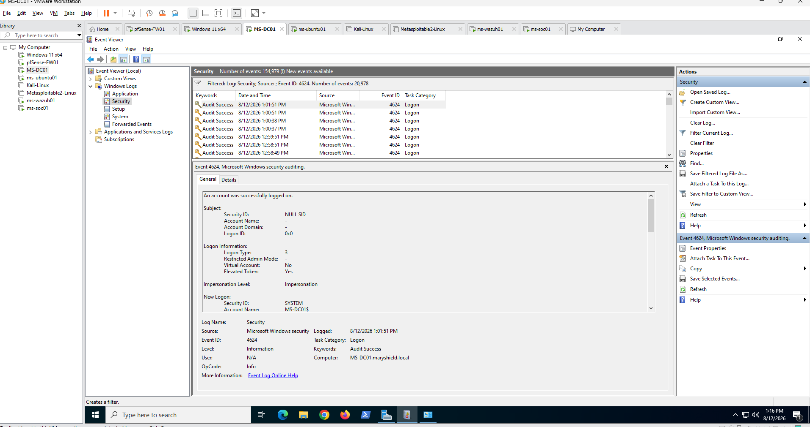
Controlled Authentication Test
A limited number of failed authentication attempts was generated using an authorized lab account.
The purpose of the exercise was to generate telemetry for detection validation and SOC analysis rather than to perform unrestricted password guessing.
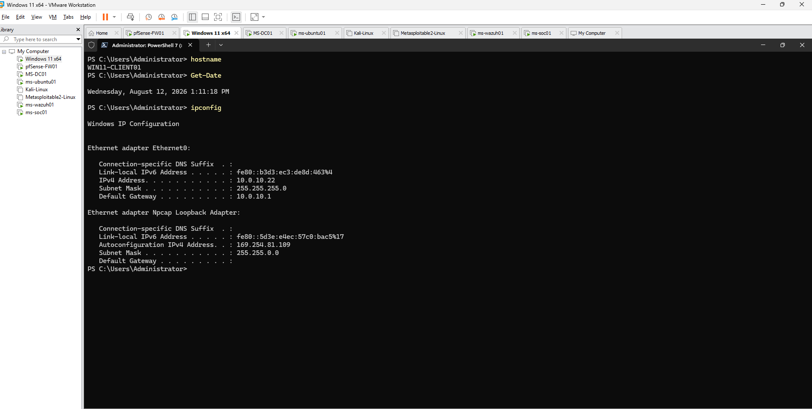
Windows Event ID 4625 Detection
Windows Security Event ID 4625 was the primary evidence source for identifying failed logon activity.
Key Fields Reviewed
- Account Name
- Account Domain
- Failure Reason
- Logon Type
- Workstation Name
- Source Network Address
- Source Port
- Timestamp
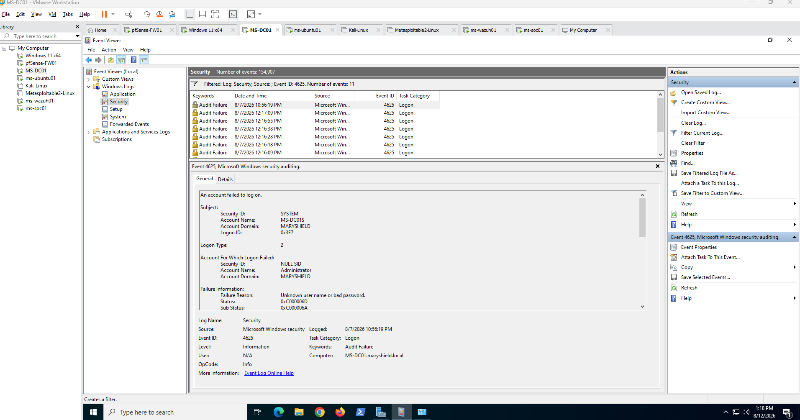
Repeated Authentication Failure Analysis
Multiple failed logon events were reviewed together to determine whether the activity represented an isolated login error or a suspicious repeated-authentication pattern.
Patterns Evaluated
- Multiple failures within a short period
- Repeated attempts against the same account
- Multiple accounts targeted from one source
- Unexpected source systems
- Failures followed by successful authentication
- Activity outside expected login patterns
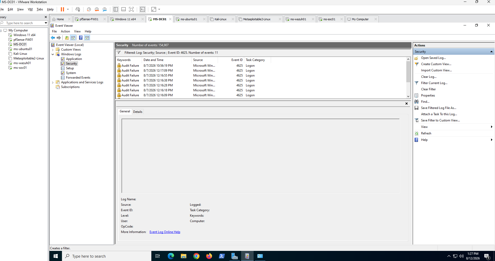
Source IP Investigation
The source network address from Event ID 4625 was used to identify the system responsible for generating the failed authentication activity.
The source was then compared with Security Onion and pfSense telemetry to determine the network path and supporting connection evidence.
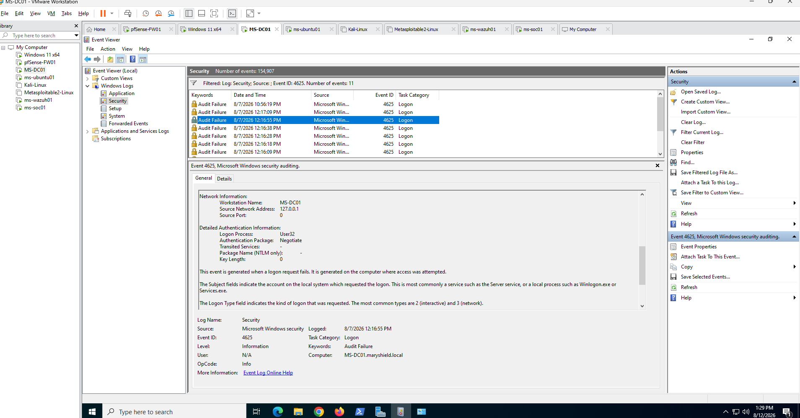
Splunk Enterprise Investigation
Splunk Enterprise was used to centralize and correlate Windows failed-logon events.
Basic Detection Search
index=* EventCode=4625
Repeated Failure Analysis
index=* EventCode=4625
| stats count by Account_Name, host
| sort - count
The exact field names depend on the Windows event sourcetype and field extractions available in Splunk.
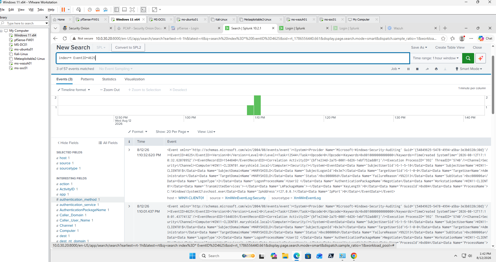
Wazuh XDR Investigation
Wazuh XDR provided additional endpoint-security context for the failed authentication events.
Evidence Reviewed
- Agent name
- Windows Event ID
- Rule description
- Rule level
- Affected account
- Source address
- Timestamp
- MITRE ATT&CK mapping where available
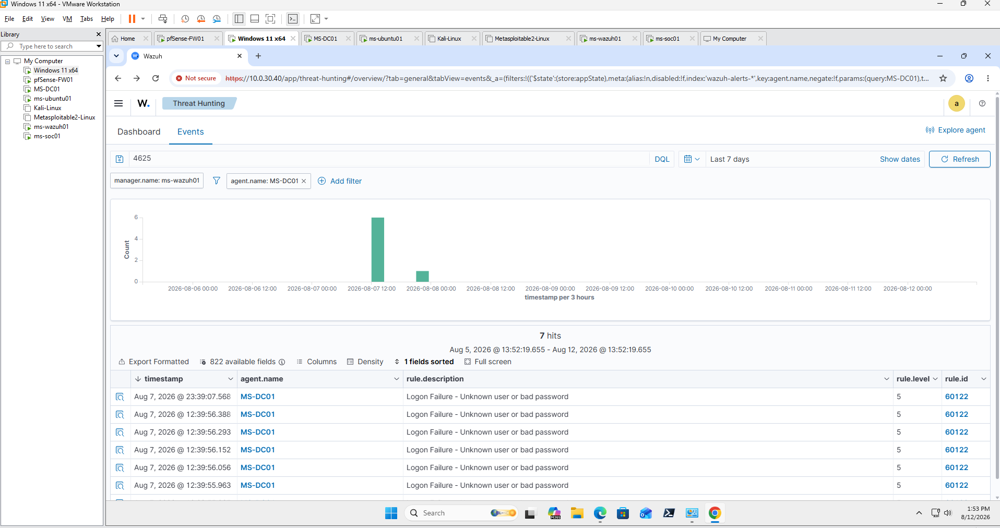
Security Onion Investigation
Security Onion was used to review network telemetry associated with the source and destination systems involved in the authentication activity.
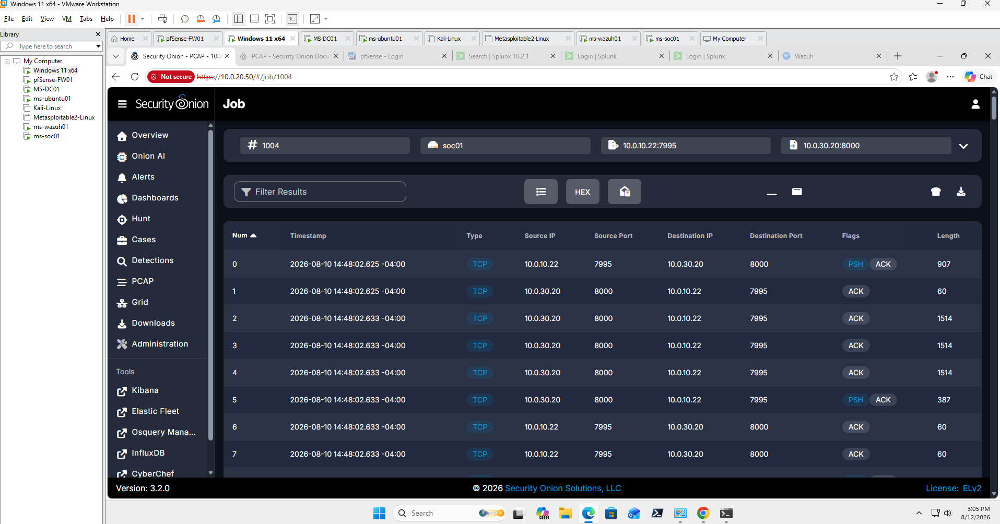
pfSense Firewall Investigation
pfSense firewall telemetry was reviewed to determine whether the suspicious authentication traffic crossed network security boundaries.
Firewall Evidence Reviewed
- Interface
- Source IP
- Destination IP
- Destination Port
- Protocol
- Allow or Block Action
- Timestamp
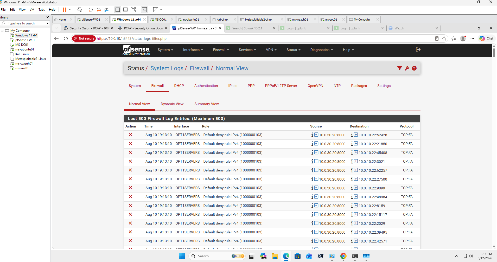
Cross-Platform Correlation
Evidence from Windows, Splunk, Wazuh, Security Onion, and pfSense was correlated using common attributes.
- Account name
- Source IP
- Destination host
- Event ID
- Timestamp
- Authentication outcome
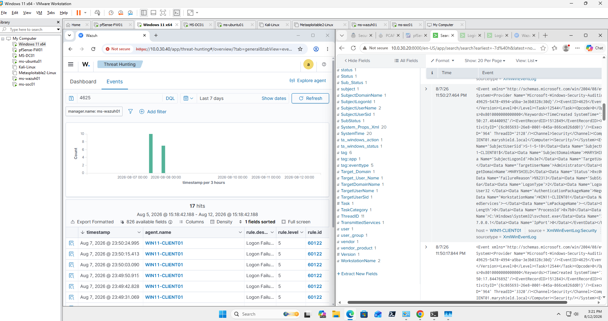
MITRE ATT&CK Mapping
Observed behavior was mapped to relevant MITRE ATT&CK tactics and techniques only when supported by collected evidence.
Authentication-guessing behavior may relate to credential-access activity, while successful use of compromised credentials would require separate evidence before mapping to valid-account techniques.
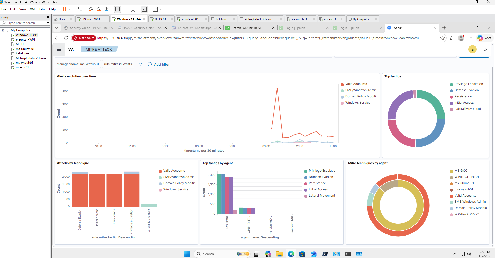
Incident Timeline
| Stage | Activity | Evidence Source |
|---|---|---|
| 1 | Normal authentication baseline reviewed | Windows / Splunk |
| 2 | Controlled failed logons generated | Windows |
| 3 | Event ID 4625 recorded | Windows Security Log |
| 4 | Repeated failures identified | Splunk / Wazuh |
| 5 | Source system investigated | Security Onion / pfSense |
| 6 | Evidence correlated across platforms | SOC Analysis |
| 7 | Containment and mitigation reviewed | pfSense / Active Directory |
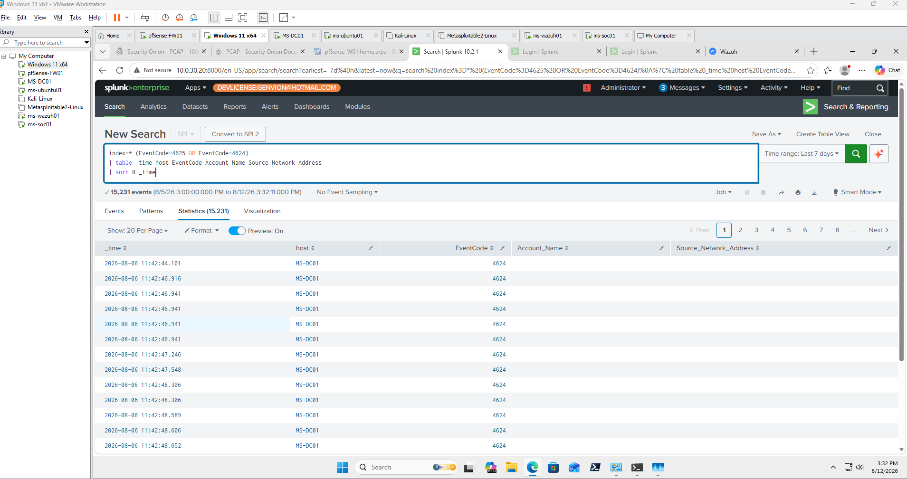
Detection Engineering
A threshold-based detection was developed to identify repeated failed authentication attempts requiring analyst review.
index=* EventCode=4625
| stats count by Account_Name, host
| where count >= 5
| sort - count
Detection thresholds should be tuned against normal authentication behavior to reduce false positives.
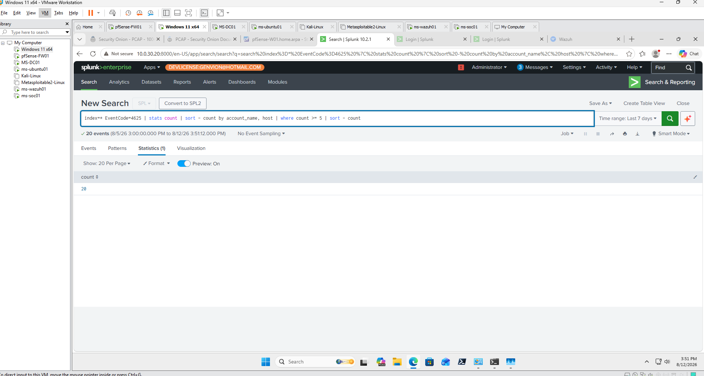
Containment
After the repeated authentication activity was validated, a temporary containment control was used to restrict continued communication from the test source.
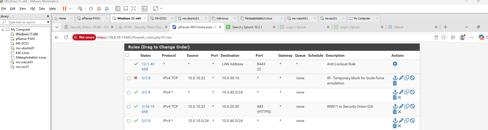
Mitigation and Hardening
- Enforce strong password requirements.
- Configure appropriate account lockout thresholds.
- Use multi-factor authentication where supported.
- Monitor repeated authentication failures.
- Review privileged accounts regularly.
- Apply least privilege.
- Restrict unnecessary remote access.
- Maintain centralized Windows authentication logging.
- Use firewall segmentation and source restrictions.
- Tune detection thresholds against normal behavior.
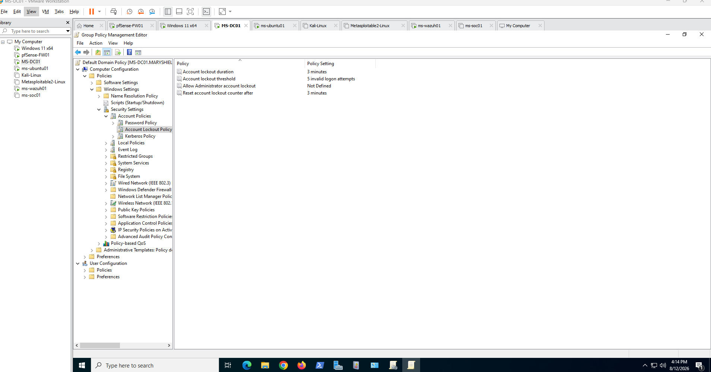
Findings
The controlled exercise successfully generated repeated failed authentication events that could be detected and correlated across multiple security platforms.
Windows Event ID 4625 provided the primary identity evidence, while Splunk and Wazuh exposed the repeated pattern and Security Onion and pfSense provided supporting network context.
Recommendations
- Continue centralized collection of authentication logs.
- Alert on repeated Event ID 4625 activity.
- Include source IP and account information in correlation searches.
- Review successful logons that immediately follow repeated failures.
- Maintain account lockout protections.
- Use multi-factor authentication for sensitive access where possible.
- Continue SIEM detection tuning to reduce false positives.
- Maintain network segmentation and firewall monitoring.
Lessons Learned
A single failed login is not sufficient to establish malicious activity. Frequency, timing, source, account context, and surrounding events are necessary to distinguish ordinary login mistakes from potentially suspicious authentication behavior.
Cross-platform correlation significantly improves confidence because Windows provides identity evidence, SIEM and XDR platforms expose patterns, and network platforms validate the source and communication path.
Final Brute-Force Investigation Report
The final report summarizes the authentication activity, source system, affected account, evidence collected, cross-platform correlation, detection logic, containment actions, and recommended defensive improvements.
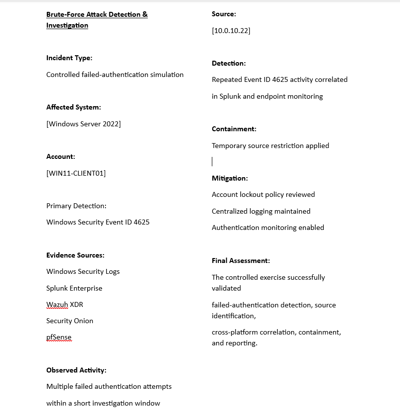
Related Project
View the complete technical implementation, architecture, detection workflow, and supporting evidence.
View Brute-Force Detection Project